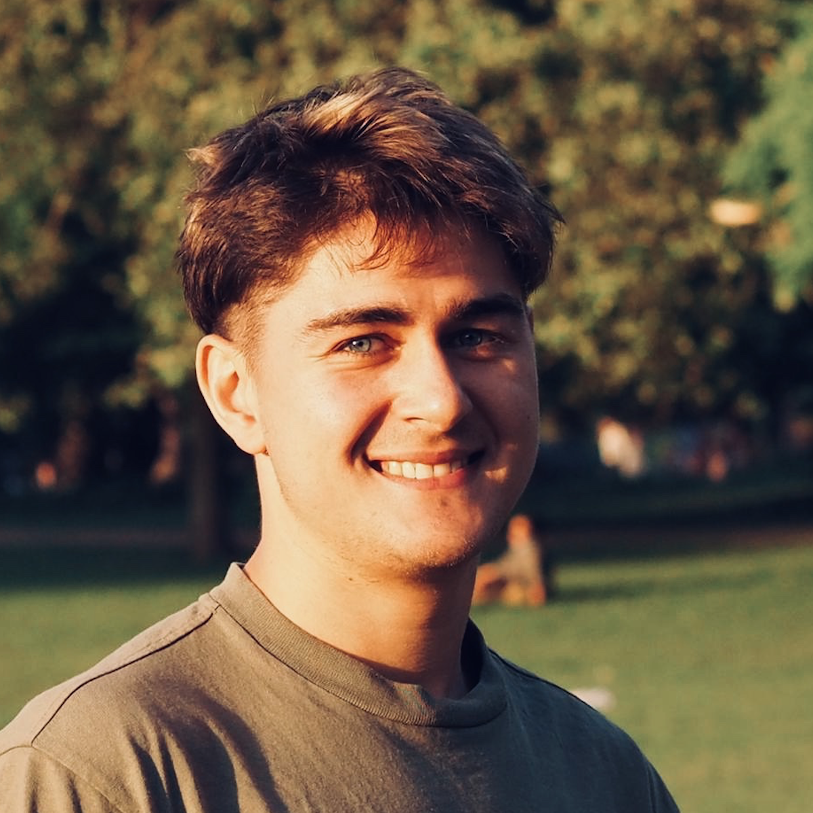

<!-- <h3>About me:</h3> -->

<div class="container-about">
<div class="text-with-image">

<p>
I'm currently working on a new venture in the AI space (stealth). I also run <a href="https://clayvc.io">Clay VC</a>, an angel syndicate investing in early stage startups in the creative AI space.
<br><br>
I was previously a Senior Research Scientist in the Machine Learning team at <a href="https://deepmind.google/">DeepMind</a>, where I worked on improving pre-training compute efficiency for multimodal foundation models.
<br><br>
Previously, I was a postdoc at the <a href="https://www.imperial.ac.uk/dyson-robotics-lab/">Dyson Robotics Lab</a> at Imperial College London, where I worked on real-time distributed inference and abstraction in spatial / visual perception systems.
<br><br>
Before that, I did a PhD in cognitive neuroscience at the <a href="https://www.ucl.ac.uk/icn/research/research-groups/space-memory">Space and Memory Lab</a>, University College London. I wrote my thesis on how the brain might implement distributed message passing algorithms to learn quickly from new data, which might look like "replaying" memories during sleep.
</p>
</div>
</div>
